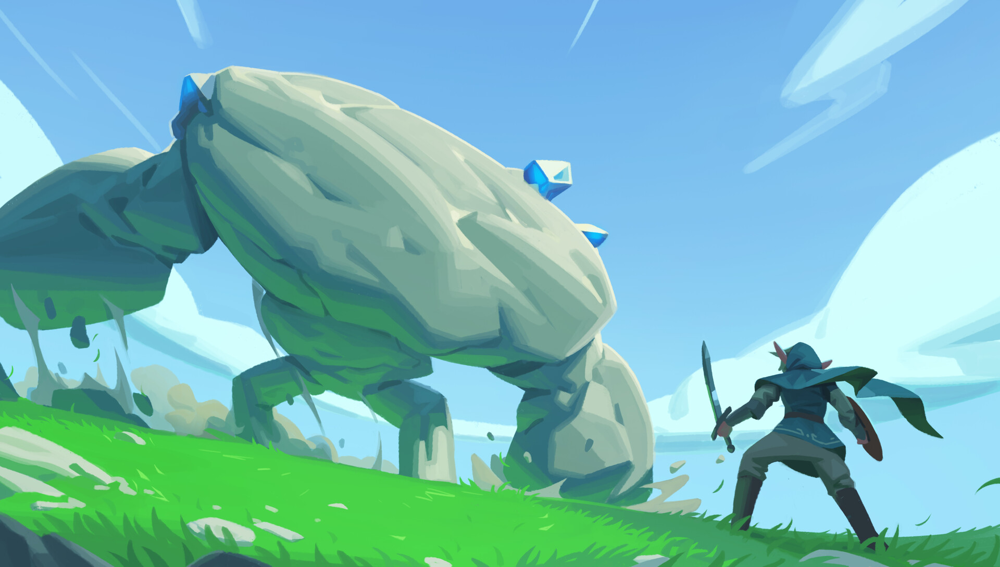

La musique,
en tant qu'élément artistique,
va bien au-delà de sa fonction initiale d'accompagnement sonore dans les jeux vidéo.
Elle se transforme en une force vitale qui façonne l'expérience interactive,
agissant comme un vecteur émotionnel puissant.
Chaque note,
chaque mélodie,
joue un rôle essentiel en guidant les joueurs à travers des mondes virtuels,
soulignant des moments clés et créant des souvenirs durables.
De manière unique,
la musique dans le jeu vidéo offre une identité distinctive,
permettant souvent de reconnaître un titre spécifique rien qu'en entendant quelques notes.
Cette capacité à associer instantanément un jeu à sa bande sonore témoigne de l'influence considérable de la musique dans l'établissement d'une connexion émotionnelle et mémorable avec les joueurs.
Au cœur de l'univers du jeu vidéo,
la musique ne se contente pas simplement d'accompagner l'action ;
elle devient un élément de reconnaissance inimitable.
Cette particularité rend chaque jeu unique et différent des autres,
la musique jouant un rôle dans la construction d'une identité distincte pour chaque expérience de jeu.
Tetris (1984)
Tetris est un jeu vidéo de puzzle emblématique créé par le programmeur russe Alexey Pajitnov en 1984.
Son concept est simple mais extrêmement addictif.
Le joueur doit manipuler des blocs de différentes formes appelés tétriminos qui descendent progressivement depuis le haut de l'écran.
L'objectif est de les faire pivoter et de les déplacer latéralement pour les encastrer de manière à former des lignes complètes sans espaces.
Lorsqu'une ligne est complète,
elle disparaît,
libérant de l'espace de jeu.
Le jeu continue ainsi,
de plus en plus rapidement,
et le défi consiste à survivre le plus longtemps possible en évitant que les tétriminos n'atteignent le haut de l'écran.
Cependant,
ce qui élève Tetris au rang de légende du jeu vidéo,
c'est sa musique emblématique,
composée par Hirokazu Tanaka.
Cette mélodie envoûtante accompagne chaque déplacement stratégique du joueur et crée une ambiance unique.
Ce qui est particulièrement remarquable,
c'est la manière dont la musique reste solidement ancrée dans la mémoire collective,
même des années après la sortie du jeu.
La répétition rythmique et l'énergie motivante de la composition ont créé une empreinte sonore indélébile dans l'esprit des joueurs,
faisant de Tetris une expérience mémorable bien au-delà de son aspect ludique.
La simplicité de la musique,
associée à son efficacité à évoquer des souvenirs,
témoigne du pouvoir durable d'une composition bien orchestrée.
Ainsi,
même après des décennies,
les premières notes de la musique de Tetris peuvent instantanément transporter les joueurs vers les heures passées à empiler des blocs virtuels,
illustrant ainsi la force évocatrice de cette composition musicale iconique.
Super Mario Bros (1985)
Super Mario Bros.,
créé par Nintendo,
est un jeu vidéo emblématique qui a laissé une empreinte indélébile dans l'histoire du gaming.
Le jeu met en scène le célèbre plombier Mario,
qui se lance dans une quête pour sauver la princesse Peach des griffes du méchant Bowser.
Le gameplay de Super Mario Bros.
est centré sur la plateforme,
obligeant les joueurs à traverser des niveaux truffés d'obstacles,
à sauter sur des ennemis,
et à collecter des power-ups.
L'un des éléments les plus mémorables de Super Mario Bros.
est sa musique iconique composée par Koji Kondo.
Le thème principal,
avec ses notes entraînantes,
est immédiatement reconnaissable et a acquis une place spéciale dans la culture populaire.
La musique accompagne les joueurs tout au long de leur aventure,
réagissant aux actions du joueur et intensifiant l'excitation lors de moments clés.
La mélodie du thème de Super Mario Bros.
est réputée pour sa capacité à rester en tête des années après que les joueurs aient éteint leur console.
Cette pérennité témoigne de la magie de la composition de Koji Kondo,
qui a réussi à créer une bande sonore intemporelle qui transcende les générations de joueurs.
La musique de Super Mario Bros.
n'est pas simplement un accompagnement,
elle est devenue une partie intégrante de l'identité du jeu,
évoquant des souvenirs nostalgiques chez les amateurs de jeux vidéo du monde entier.
illustrant ainsi la force évocatrice de cette composition musicale iconique.
The Legend of Zelda (1986)
The Legend of Zelda est une franchise de jeux vidéo légendaire créée par Shigeru Miyamoto et Takashi Tezuka,
et développée par Nintendo.
Le premier jeu,
The Legend of Zelda,
est sorti en 1986,
et depuis lors,
la série a captivé des générations de joueurs à travers le monde.
L'univers de The Legend of Zelda se déroule généralement dans le royaume fictif d'Hyrule et suit les aventures du héros principal,
Link,
qui cherche souvent à sauver la princesse Zelda et à contrecarrer les plans du maléfique Ganon.
Le but du jeu varie d'un opus à l'autre,
mais il implique généralement l'exploration de vastes mondes,
la résolution d'énigmes,
la collecte d'objets et la progression à travers des donjons pour vaincre les forces du mal.
L'un des éléments caractéristiques de la série est l'utilisation d'objets magiques tels que l'épée de légende,
le boomerang,
et d'autres artefacts,
qui aident Link dans sa quête.
En ce qui concerne la musique,
The Legend of Zelda est célèbre pour sa bande sonore emblématique,
composée principalement par Koji Kondo.
Le thème principal de la série,
souvent appelé le "thème de Zelda" ou "thème du héros",
est l'une des mélodies les plus reconnaissables de l'histoire des jeux vidéo.
Cette composition musicale épique évoque un sentiment d'aventure,
de mystère et d'héroïsme,
et elle accompagne les joueurs tout au long de leur voyage à travers les vastes étendues de Hyrule.
La musique de The Legend of Zelda a le pouvoir unique de rester gravée dans la mémoire des joueurs bien après avoir éteint la console.
Les notes du thème principal évoquent souvent des souvenirs nostalgiques et transportent instantanément les joueurs dans l'univers fantastique de la série.
C'est une illustration parfaite de la façon dont la musique peut transcender son rôle fonctionnel pour devenir une partie intégrante de l'identité d'un jeu,
contribuant à créer une expérience inoubliable pour les joueurs.
illustrant ainsi la force évocatrice de cette composition musicale iconique.

Sonic the Hedgehog (1991)
Sonic the Hedgehog,
créé par SEGA,
a été un jalon dans l'histoire des jeux vidéo depuis son lancement en 1991.
Le jeu met en scène Sonic,
un hérisson bleu ultrarapide,
dans sa quête pour sauver le monde du Dr.
Robotnik,
le méchant scientifique.
L'objectif principal est de collecter des anneaux dorés tout en évitant les obstacles et en battant les ennemis,
incarner la vitesse et l'action.
Ce qui rend Sonic marquant,
outre son gameplay rapide et son design caractéristique,
est sa musique iconique.
Composée par Masato Nakamura,
membre du groupe japonais Dreams Come True,
la bande-son de Sonic the Hedgehog est exceptionnelle.
Chaque thème musical capture l'énergie et la vitesse du jeu,
renforçant l'expérience immersive pour les joueurs.
Le thème principal de Sonic,
surnommé "Green Hill Zone," est particulièrement saisissant.
Les mélodies entraînantes et les rythmes rapides de cette musique restent en tête même des années après avoir joué au jeu.
La composition de Nakamura n'est pas simplement un accompagnement,
mais un élément essentiel de l'identité de Sonic.
Elle évoque l'excitation et l'aventure,
créant une connexion émotionnelle avec les joueurs qui persiste bien au-delà de la période de jeu.
illustrant ainsi la force évocatrice de cette composition musicale iconique.
Pokémon (1996)
Pokémon,
depuis ses débuts en 1996,
est bien plus qu'un simple jeu vidéo ;
c'est une véritable aventure.
Le but du jeu est de devenir un Maître Pokémon en capturant et en entraînant ces créatures fantastiques appelées Pokémon.
Les joueurs parcourent diverses régions,
affrontent d'autres Dresseurs Pokémon,
et cherchent à devenir les champions de la Ligue Pokémon.
Au-delà de son aspect ludique,
Pokémon est également marqué par une bande sonore iconique,
notamment la musique qui accompagne le lancement d'un combat.
Composée par Junichi Masuda,
cette mélodie est gravée dans la mémoire collective des joueurs depuis des décennies.
Dès les premières notes,
elle crée une montée d'excitation,
évoquant l'aventure qui attend le joueur.
Cette musique incarne l'esprit d'exploration et d'émerveillement qui caractérise l'univers Pokémon.
illustrant ainsi la force évocatrice de cette composition musicale iconique.
L'Écho Envoûtant
Chacun des jeux évoqués,
de Tetris à Pokémon,
met en lumière l'impact significatif de la musique dans l'univers des jeux vidéo.
Ces compositions musicales ne se contentent pas d'accompagner le gameplay,
mais elles deviennent des éléments fondamentaux de l'expérience globale du joueur.
Dans Tetris,
la simplicité de la mélodie de Hirokazu Tanaka se marie parfaitement avec l'aspect addictif du jeu,
créant une synergie mémorable.
Les notes rythmiques répétitives ne sont pas simplement un arrière-plan sonore,
mais un guide subtil de la progression du joueur,
ajoutant une couche d'engagement à l'expérience.
Les thèmes emblématiques de Super Mario Bros.
et The Legend of Zelda,
créés respectivement par Koji Kondo,
vont au-delà de leur rôle initial d'accompagnement pour devenir des signes sonores distinctifs des franchises.
Ces mélodies ne sont pas simplement des compositions musicales,
mais des empreintes mémorables qui évoquent instantanément l'univers des jeux,
renforçant ainsi l'immersion des joueurs.
La vitesse et l'énergie captivantes de Sonic the Hedgehog,
soutenues par les compositions de Masato Nakamura,
illustrent comment la musique peut être intrinsèquement liée à l'identité d'un personnage emblématique.
La musique devient un moteur narratif,
renforçant la sensation de vitesse et d'aventure caractéristique de la série.
Enfin,
la musique de combat Pokémon de Junichi Masuda accompagne les joueurs dans leurs batailles pour devenir Maîtres Pokémon.
Cette composition emblématique intensifie l'excitation des combats et crée une connexion émotionnelle entre le joueur et ses créatures.
La musique devient ainsi un compagnon sonore fidèle à l'aventure Pokémon.
En résumé,
ces jeux et leurs bandes sonores emblématiques témoignent de la manière dont la musique peut aller au-delà de son rôle initial,
devenant un héritage culturel dans l'industrie du jeu vidéo.
Ces compositions ne sont pas simplement des pièces musicales,
mais des éléments immersifs qui continuent de résonner dans la mémoire des joueurs,
soulignant ainsi la puissance durable de la musique dans le monde du jeu vidéo.